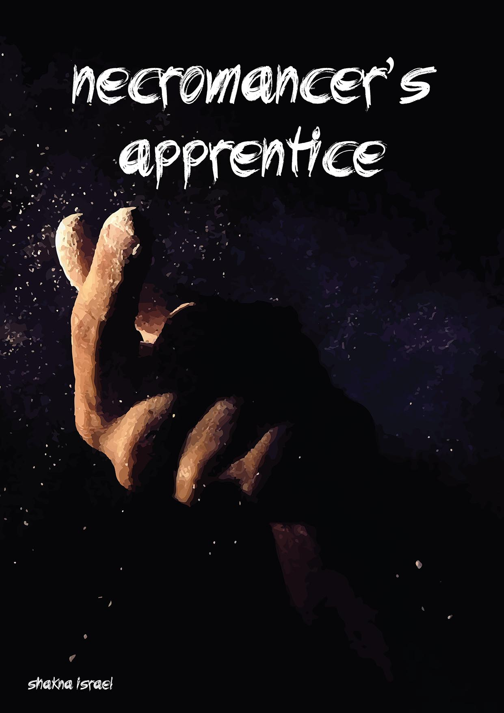

Contributing
There's a few ways to help out with this project.
Firstly, if you spot a grammar or spelling issue - create a pull request
The file writegood.txt contains the issues that the write-good linter has detected thus far.
Secondly, if you want to add to the story in someway, write some part in any part of any chapter - create a pull request
Thirdly, if you don't like the way the story is going, or want to take it in any direction - fork it. If you make a fork, let me know and I'll add it to the README for others to find..
